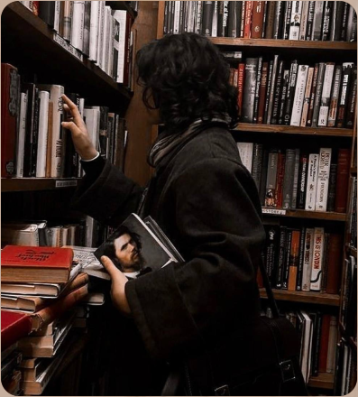
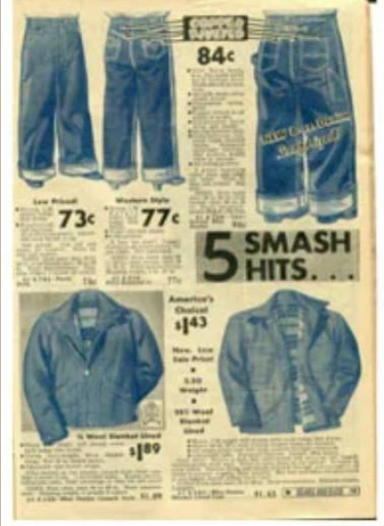

История появления джинсов
Это было в середине XIX века, в разгар «золотой лихорадки» в Калифорнии. Искатели удачи со всей Америки стекались в Сан-Франциско, надеясь разбогатеть.


Но золото давалось тяжело: палатки, грязь, бесконечный промыв породы в ледяной воде. Обычные брюки не выдерживали: они рвались на коленях и протирались на карманах от тяжёлых образцов породы. Людям нужна была невиданная прочность. В 1853 году в Сан-Франциско приехал молодой баварский эмигрант по имени Леви Штраусс. У него была партия плотной парусины для палаток, но торговля шла плохо. Покупатели жаловались: «Парусина крепкая, но кто будет ставить палатку, когда золото вот-вот найдут!» Тогда один старатель предложил: «Почему бы тебе не сшить из неё штаны?»